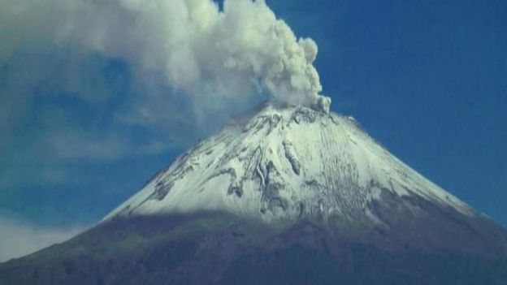
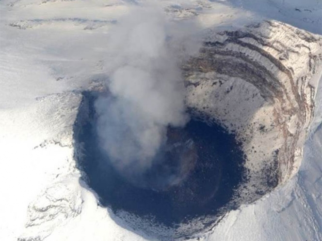
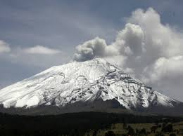
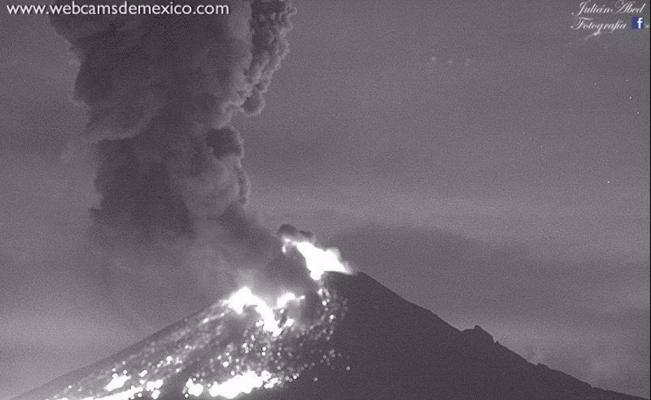
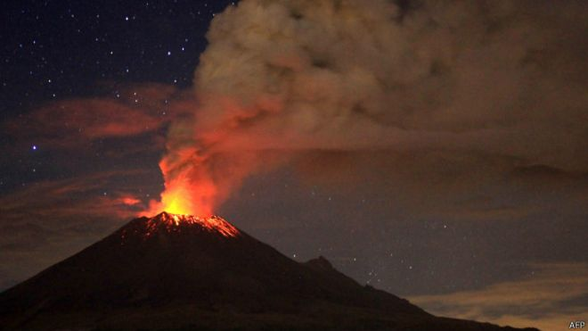
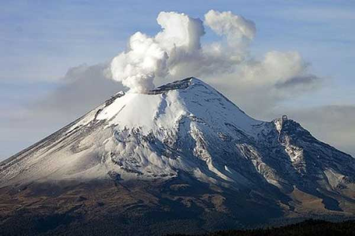

El Popocatépetl (en náhuatl: popocatepetl, ‘el cerro que humea’‘popoca, humear; tepetl, cerro’)? es un volcán activo localizado en el centro de México, en los límites territoriales de los estados de Morelos, Puebla y México. Se localiza a unos 72 km al sureste de la Ciudad de México, 43 km de Puebla, 63 km de Cuernavaca, y 53 km de Tlaxcala.Tiene una forma cónica simétrica y está unido por la parte norte con el Iztaccíhuatl mediante un paso montañoso conocido como Paso de Cortés. El volcán tiene glaciares perennes cerca de la boca del cono, en la punta de la montaña. Es el segundo volcán más alto de México, con una altitud máxima de 5500 metros sobre el nivel del mar, sólo después del Citlaltépetl de 5610 msnm.
UBICACION
Es un volcán activo localizado en el centro de México, en los límites territoriales de los estados de Morelos, Puebla y México. Se localiza a unos 72 km al sureste de la Ciudad de México, 43 km de Puebla, 63 km de Cuernavaca, y 53 km de Tlaxcala.


DIMENCION
El Popocatépetl forma el término austral de la Sierra Nevada. A partir de él, se desprenden hacia el poniente las serranías de Ajusco. Gran número de las erupciones del Popocatépetl han tenido lugar por su conducto, a lo que se debe su gran profundidad, las dimensiones del volcán y su altura. Sus solfataras, en vías de extinción, demuestran su actividad actual.
El Popocatépetl es la segunda altura de la República Mexicana (5 452 m), después del Pico de Orizaba. Está separado del Iztaccíhuatl por una depresión, donde el Puerto de Pelagallinas es el paso mas bajo. Se encentra el volcán a 88 km al oriente de la ciudad de Mexico y sirve de límite a los estados de México, Puebla y Morelos.
DEPENDENCIAS QUE LO MONITOREAN
México se encuentra situado en una región con importante actividad volcánica. De los 3,000 volcanes que aproximadamente tiene el país, 14 son considerados activos. El país ha vivido actividades recientes de volcanes que han presentado fases eruptivas importantes, algunas con consecuencias desastrosas, ejemplo de ello son el Paricutín, en Michoacán, que hizo erupción en 1943, el Chichón, en Chiapas, en 1982; el Tacaná, en Chiapas, en 1986 y el volcán de Colima, el cual ha tenido episodios de gran actividad en los últimos años. La prueba más reciente se vivió a finales de 1994 cuando el volcán Popocatépetl, pasó de una fase moderada de actividad a una de gran actividad sísmica y fumarólica con abundante emisión de gases, cenizas, extrusión de lava e incluso producción de flujos piroclásticos durante los eventos eruptivos de mayo y junio de 1997.El Popocatépetl, es un estratovolcán andesítico-dacítico, localizado a 60 km al sureste de la Ciudad de México y a 45 km al oeste de la Ciudad de Puebla. Tiene una altura de 5452 msnm y un cráter de 900 m de diámetro y aprox. 200 m de profundidad. Su edificio cubre un área de 500 km2abarcando los estados de Puebla, México y Morelos.
La única manera de percibir y evaluar el estado de actividad y riesgo asociado de un volcán, es a través de la observación y vigilancia sistemática mediante diversos métodos visuales e instrumentales. Si estos se aplican en forma anticipada en las fases previas a un proceso eruptivo, es posible, en la mayoría de los casos, detectar oportunamente un cambio cualitativo y cuantitativo de la actividad que inclusive pudiese conducir a una predicción en el corto plazo de un proceso eruptivo inminente y poner en marcha, de parte de las autoridades de Protección Civil el plan de emergencia previamente establecido. Una muestra de un sistema de vigilancia y monitoreo oportunamente establecido es el del volcán Popocatépetl. En un esfuerzo conjunto del Centro Nacional de Prevención de Desastres (CENAPRED), de la Secretaría de Gobernación, los Institutos de Geofísica y de Ingeniería , de la UNAM , y con la colaboración del Cascades Volcano Observatory, del U.S. Geological Survey, se estableció en los últimos años un complejo sistema de observación telemétrico con una central de adquisición y procesamiento de datos.

MEDIDAS PREVENTIVAS EN CASO DE CAIDA DE CENIZA

• Mantén la calma.
• No humedecer la ceniza a fin de evitar taponamientos en el sistema de alcantarillado
• Utiliza medios electrónicos y de comunicación para obtener información confiable que den las autoridades de Protección Civil sobre la caída de ceniza y atiende siempre sus instrucciones.
• No realices actividades al aire libre y si es posible no salgas.
• Cierra puertas y ventanas y coloca toallas o trapos húmedos en las rendijas.
• Si tienes que salir cúbrete con un pañuelo o tapabocas, limpia ojos y garganta con agua pura.
• Para los ojos, usa lentes protectores, especialmente si usas lentes de contacto.
• Ten a la mano una linterna y pilas.
• La ceniza volcánica puede ser resbaladiza, sobre todo cuando está mojada. Toma las precauciones necesarias.
• Cubre tinacos, cisternas y depósitos de agua.
• Barre y retira la ceniza de techos, azoteas, patios y calles, deposítalas en bolsas y no permitas que se vaya al drenaje.
• Si es posible no conduzcas, si tienes que hacerlo, hazlo a baja velocidad y con las luces encendidas, ya que la ceniza dificulta la visibilidad y provoca que el pavimento se vuelva resbaloso.
• Ante la caída de ceniza volcánica evita consumir alimentos en la vía pública.
• Si permaneces expuesto por algún tiempo a las cenizas volcánicas, al ingresar a tu casa se recomienda cambiar de ropa.
• Durante la caída de ceniza volcánica, evita que los menores realicen actividades al aire libre.
• Mantén a tus mascotas en un lugar techado al igual que sus alimentos. Si tus macotas salen, cepíllalos antes de permitirles la entrada nuevamente.
• La ceniza puede ser usada para parques, jardines, macetas o tierras de cultivo, ya que es rica en minerales.
• No repitas ni difundas rumores. La ciudad de Puebla se encuentra a una distancia segura, no intentes salir.
• Usa las vías de comunicación solo en caso de ser necesario.
Una erupción volcánica puede ser un acontecimiento impresionante y destructivo. A continuación se indican varios consejos para evitar el peligro y saber qué hacer si te sorprende una erupción.
Consejos de seguridad:
• Mantente alejado de volcanes activos.
• Si vives cerca de un volcán activo, prepara un kit de emergencia que incluya gafas de seguridad, una máscara, una linterna y una radio en buen estado que funcione con pilas.
• Elabora una ruta de evacuación y ten el depósito de gasolina del coche siempre lleno.
• Evacua siguiendo las recomendaciones de las autoridades para no encontrarte lava y barro, así como rocas y escombros que puede arrojar el volcán.
• Evita zonas de ríos y regiones bajas.
• Antes de abandonar tu casa, ponte una camisa de manga larga y pantalones largos; usa gafas de seguridad o normales, sin lentillas. Ponte una máscara de emergencia o envuélvete la cara con un paño húmedo.
• Si no vas a evacuar, cierra puertas y ventanas, y bloquea la chimenea y otros puntos de ventilación para evitar que la ceniza entre en la casa.
• Ten en cuenta que la ceniza puede sobrecargar el tejado y puedes necesitar retirarla. Durante la limpieza, lleva elementos de protección
• La ceniza puede dañar motores y piezas metálicas, así que evita conducir. Si debes conducir, no superes los 55 kilómetros por hora.
MEDIDAS PREVENTIVAS EN CASO DE ERUPCION VOLCANICA
• 1. Si se presenta la posibilidad de que ocurra una erupción y tú y tu familia pueden verse afectados, probablemente la única medida de prevención correcta sea evacuar. Entérate de las medidas del plan de contingencia de tu localidad y ten a la mano todos los documentos de valor (identificaciones, títulos de propiedad, cartillas).
•
• 2. Si tienes enfermos en la familia, repórtalos previamente a las autoridades para asegurarles transporte en caso de una evacuación. Debes estar atento a las alarmas (sirenas, campanas, silbatos, bocinas) que pueden avisar de la inminencia de una erupción.
•
• 3. Mantén almacenada agua potable y alimentos no perecederos para disponer de ellos en el momento de una eventual evacuación; cubre los depósitos de agua para evitar que se contaminen de cenizas o gases. Si tienes animales, resérvales pasto, agua y demás alimentos y evita que los consuman si están contaminados con ceniza.
•
• 4. Mantén un maletín de primeros auxilios, un radio de pilas, una linterna en buen estado y pilas o baterías de reserva. Esté alerta a las instrucciones que den las autoridades y no preste atención a rumores.

ACTIVIDAD VOLCANICA
El Popocatépetl es conocido por sus alta actividad volcánica, que se presenta comúnmente. Desde que se reactivó, en 1997, hasta el momento, ha presentado una serie de erupciones de las cuales la más violenta ha sido la del año 2000, y la última la noche del 4 y madrugada del 5 de noviembre de 2014. El volcán es uno de los más monitoreados del mundo y también es uno de los más peligrosos y que amenaza más de 26 millones de personas.
